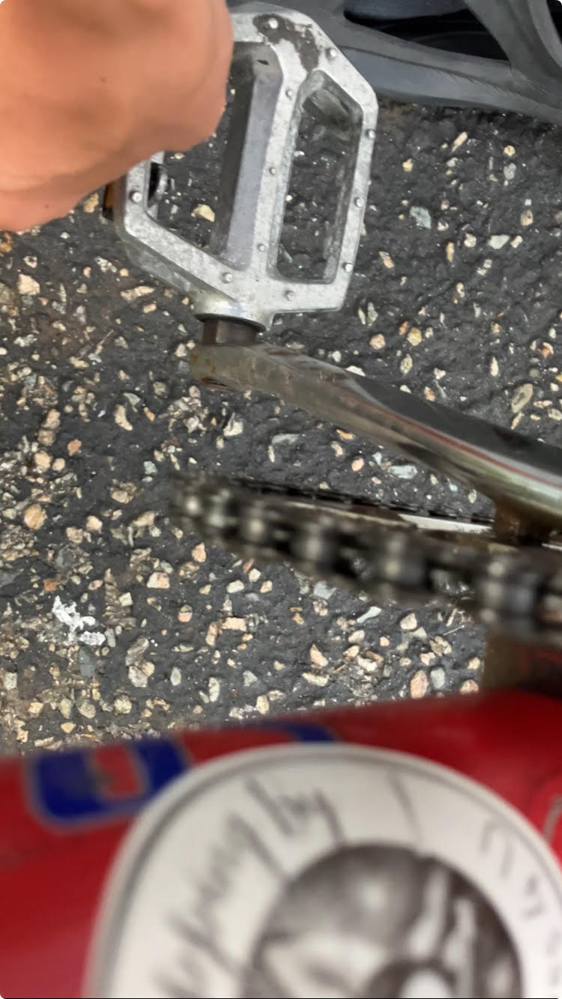
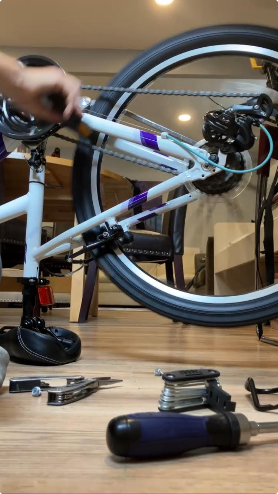
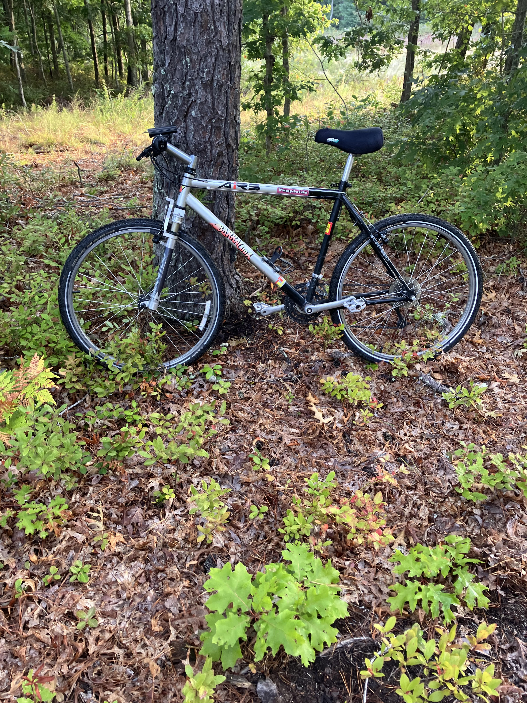

Before bringing your bike in, please contact me first by email or phone. Not all repairs can be done on-site, and I’ll need to confirm if I can help with your specific issue. ✅ This helps avoid wasted trips and ensures I have the right tools or parts ready. Thanks for understanding!.
🔧 Common Bike Repair Costs
Service Estimated Price
Basic Tune-Up $30 – $50
Full Tune-Up (gears, brakes, etc.) $70 – $100
Flat Tire Repair (tube not included) $10 – $15
Brake Adjustment $10 – $20
Gear/Derailleur Adjustment $15 – $25
Chain Replacement (parts extra) $20 – $35
Brake Pad Replacement (parts extra) $15 – $25
Bottom Bracket Service $30 – $50
Headset Adjustment $15 – $25
Cable Replacement (per cable) $20 – $30
Bike Cleaning & Degreasing $25 – $40
If the service you need isn’t listed here, just call or email me to check if I can do it.
It’s better if you bring your own parts – this usually means you’ll get your bike back faster. When a service says “parts extra,” that does not apply if you bring your own parts. I can still provide parts if needed, but availability may affect turnaround time.
Big bike shops often charge premium prices for even the most basic repairs —
sometimes upwards of $120+ for a tune-up or $30 just to fix a flat tire.
On top of that, you’re often left waiting days or even weeks to get your bike back.
If what I did was a really quick repair I will probably make you pay less.
At Hugo Velo, you get:
✅ Honest, upfront pricing
✅ Fast turnaround (especially if you bring your own parts)
✅ Friendly, personal service — no big-shop attitude
✅ Work done with care, right from my home-based shop
I keep things simple, fair, and affordable — because bike repair shouldn’t break the bank.
📞 Call 786-865-5666 or email hugo.mouy@gmail.com first, and let’s get you back on two wheels the right way.
  